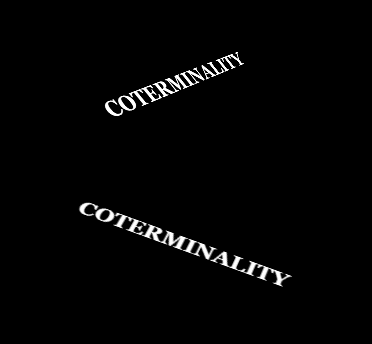
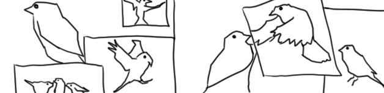

For some of my academic projects, click the link below.
Academic Projects

Coterminality
A brief, ~2500 word game made in Twine (written in Harlowe). Contains ten endings tailored to the choices of the player throughout. Gained experience in the structuring and mapping of a nonlinear story, as well as writing dialogue.

Journal of a Lonely Bird
Brief collection of 12 poems I wrote during the summer of 2023. The poems follow a small bird traveling across the midwest into the south United States, introspecting on its existence and place in the world.
Duelity
Duelity is an experimental short film which concept revolves around duality. Framing the scenario in a duel between two people who simultaneously love and loathe one another. Was made in the course of 24 hours with footage/pictures taken by me over the course of the year.

Jacob Hernandez is a 22-year-old multimedia artist based in Chicago. He began attending Columbia College Chicago in 2021 at the age of 18. In the free time he gets, he is usually spending it playing Destiny 2, watching a movie, or wandering about taking pictures of whatever he sees. He's been editing since middle school, honing his skills in Windows Movie Maker. Eventually moving on up to other software such as Sony Vegas, Premiere Pro, with a little bit of Final Cut and Avid thrown into the mix.